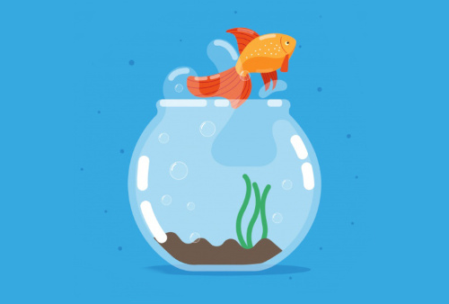
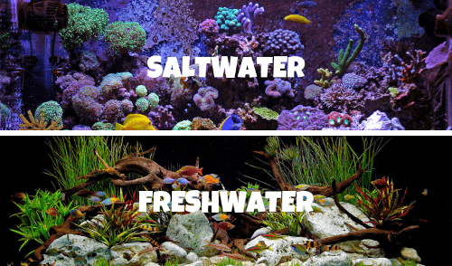

An aquarium with colorful fish is a great addition to any home. Studies have shown that watching fish tanks promotes a better mood. Fish are ideal pets for people with allergies to more common pets like dogs and cats or those with limited living space.
In a perfect world, caring for aquarium fish seems like an easy task – you may think that you just have to choose the most interesting, beautiful species, take them home, and place them in a tank filled with clean water. You may also think that you don’t have to worry about your fish getting ill, refusing to feed, being infected by parasites, or fighting with other species within the tank.
But in reality, choosing and caring for aquarium fish also requires care and attention. You will need to invest a considerable amount of your time, attention, energy, and money in making sure that the pet fish are always healthy.
Regardless of whether it is your first time to care for aquarium fish or you’ve tried owning fish before but failed, there are plenty of things you must take into consideration when buying your fish. Your top priorities hould include purchasing high-quality pet food for fish and the proper pet supplies.
To ensure that you can successfully care for a pet fish, here are the seven most crucial factors that must be taken into consideration.
1. FISH SPECIES
There are lots of fish species that you can raise in an aquarium. Here are the two main categories:
-
Saltwater fish
These species are enjoyable to look at because they are colorful. Some examples are clownfish and angelfish. However, they may die early, unless you closely monitor the salinity and maintenance of the water.
-
Tropical fish
As opposed to saltwater fish, tropical fish are harder to maintain and breed. Examples of tropical fish are Danios and Guppies. Some people choose to care for these species because they are known to bring fortune. So when they die, they must be replaced immediately to prevent bad luck.
2. FISH COMPATIBILITY
Combining different species of fish in a single tank is not advisable. Compatibility is crucial for success within the aquarium; otherwise, there will be difficulties.
Generally, compatibility means that the fish species get along together. They must not harass each other, but remain peaceful and friendly. Bear in mind that fish subjected to harassment on a regular basis can become sick due to physical stress, even when the water is of excellent quality.
In addition to this basic compatibility, your fish must also be compatible in other ways.
-
Water Conditions
Some fish do best in hard, alkaline water while others prefer soft, acid water.
This means that if you combine both types of fish, you won’t be able to provide the best environment for all the fish. Those that aren’t compatible with the water in the tank won’t exhibit the best color or grow as large as they normally would. Worse, they can die early. -
Behavioral Patterns
The behavioral pattern of the fish must also be considered. Fish that are fast swimmers can annoy and upset those that swim slowly. Moreover, aggressive swimmers can eat more food than the other fish during feeding time; as a result, the more timid species will get less food. You may think that increasing the amount of food you give can solve this problem, but it won’t. In fact, this can lead to another problem – the tank will be filled with uneaten food, which can ruin the quality of water. A difference in behavior can be troublesome. Conflicts can still happen within the tank even if your fish have non-violent dispositions. Those that are territorial will prevent other fish from entering their area, which then limits the amount of space where the other fish can swim and hide. Remember that if they can’t hide, the dominant species will maintain control of them.
-
Food Requirements
Combining fish with different food requirements will make it harder for you to supply them with the right food. Those that require vegetable matter won’t grow well if you favor those that require lots of proteins. Remember, health and growth are tied to their diet, and that proper balance varies from one fish to another.
3. THE HEALTH OF THE FISH
Before taking home aquarium fish, make sure that you’ve chosen the healthy ones. Healthy fish are alert and active, have clear eyes, and don’t have any sores on their body. So make sure to check the fish’s body and behavior for anything that suggests that they may be sick. All it takes is careful observation, so watch them for a certain amount of time before making a final purchase.
Stay away from fish with bulging or cloudy eyes, missing scales, velvety patches, white spots, lesions. Also avoid fish that swim erratically or those sulking in the corner, gasping at the surface, and scraping against the objects within the tank.
In addition to looking for fish that don’t have any of these warning signs, you must also observe the other fish swimming with the species you are looking at. If there is a dying or diseased fish inside the tank, you must assume that all the other species in the tank are infected too, even if they look healthy and behave normally.
4. FISH FOOD
Lots of fish do great on a diet of dry flake food; you just have to use high-quality food.
Today, there are different flake foods on the market. To ensure a more balanced diet for your fish, consider buying different kinds and feeding them a different one at each feeding.
For larger fish, pellet foods are great options. But for fish that require lots of protein, freeze-dried foods are better choices. And if you bought a vegetarian fish, get flake foods that are specially formulated to provide less protein but contain more vegetable material.
Be cautious when buying commercial fish foods. Stay away from those with containers that are dusty or appear like they’ve been on the shelf for a long time. Reputable pet food stores always offer fresh and clean fish care products. You can get recommendations from people you trust or those who have been caring for fish for a long time.
Remember also to buy fish food in small containers.It may seem practical to buy in big sizes, but the nutritional value of the food will start to deteriorate once the container is opened. For instance, more than half of the nutritional value will be gone within 3-6 months after you’ve opened the container. So unless you have lots of fish that can consume it in a month or two, avoid buying bulk-packed fish foods.
One of the most overlooked rules of fishkeeping is not to overfeed your fish. Overfeeding is killing your pet with kindness. Also, all the uneaten food will pollute the water in the tank. The best practice is to feed your fish only enough food at a time. There are ways to understand if you are overfeeding your fish.
Here’s a tip: You can still effectively care for your fish while you’re on vacation. For instance, there is a weekend complete food you can purchase that ensures that your aquarium fish are well-fed even while you are away from home. As the fish consume this easy-to-digest and nutritious food, the block dissolves. And because of its balanced phosphate content, there will be no water clouding.
-
Here’s a tip:
You can still effectively care for your fish while you’re on vacation. For instance, there is a weekend complete food you can purchase that ensures that your aquarium fish are well-fed even while you are away from home. As the fish consume this easy-to-digest and nutritious food, the block dissolves. And because of its balanced phosphate content, there will be no water clouding.
5. SIZE OF THE FISH
No matter how peaceful they may appear, don’t keep fish of different sizes in the same tank. This leads to a disaster because fish naturally eat whatever fits in their mouth. For instance, tetras and angelfish can get along together while they are small. But once they grow, they are not safe with each other anymore because the bigger angels will eat the smaller tetras.
6. SIZE OF THE TANK
Tank size is also a crucial consideration because you should give your fish enough space to swim around as they grow. For beginners, getting smaller fish is highly recommended because they are a lot easier to manage. Also, they make cleaning the aquarium hassle-free.
Be aware also of the growth and maximum size of the fish you want to get. Though the tank size can limit fish growth, this is not always the case. Some fish don’t produce hormones that can limit their growth. For instance, the Columbian Shark Catfish will grow until they become unmanageable in a small tank. And even if the fish can limit their size to fit in the small tank, the regular production of the hormone can significantly shorten their lifespan. So make sure to buy a tank that is suitable for the specific aquarium fish you want to get.
7. AQUARIUM EQUIPMENT
A vital factor in properly maintaining an aquarium is the filtration. Basically, there are three types: biological, chemical, and mechanical.
Biological filtration makes use of beneficial bacteria. Chemical filtration needs a chemical filter media. Finally, mechanical filtration requires added equipment aside from the beneficial bacteria. Depending on the type of aquarium you choose, you may need to buy power filters, canister filters or wet/dry filters.
To manage the accumulation of biological agents like parasites, viruses, fungi, and bacteria, you also need to purchase ultraviolet sterilizers. A cooler is also needed to control the heat produced by the UV sterilizers so as not to harm the fish.
Test kits are essential as well because these will help you monitor the chemical level, pH and other water parameters. Aquarium plants and decorations might also be necessary to achieve and maintain the natural habitat of the fish.
Do not buy aquarium fish without any knowledge of how to keep them healthy and safe at home. It may be fun to bring home a new fish, but doing it without the right fish care information can be costly and disastrous.
Thus, you need to read as much as you can about caring for aquarium fish, and even seek expert advice so you can choose the right combination of fish for the size of tank you have, along with the proper fish care supplies you need to purchase. For all your needs, consider getting them only from a trusted pet products store. They can also help you with potential problems and questions in the future.